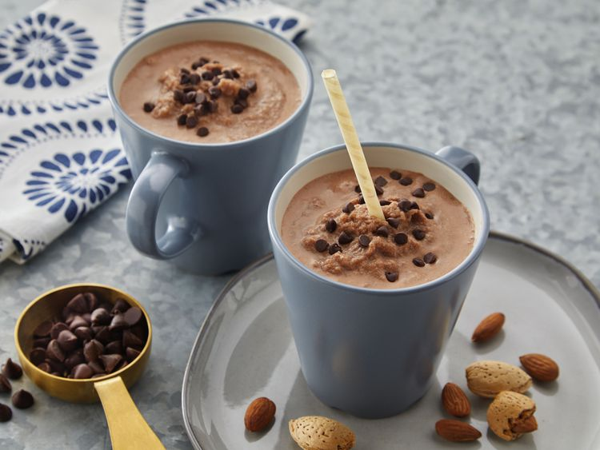

Home
Java Chip Frappe

Description
Skip your regular cup of coffee and try this delicious and refreshing frappe blended with coffee and chocolate to kickstart your day.
Ingredients
- 1 1/2 cups Almond Breeze Original Almondmilk
- 2 tablespoons Almond Breeze Vanilla Almondmilk Creamer
- 3 cups ice cubes
- 1 1/2 cups strong brewed coffee, cooled
- 1/4 cup chocolate syrup
- 1/2 cup semi-sweet chocolate chips
Steps
- Combine ice, coffee, Almond Breeze Original Almondmilk, Almond Breeze Vanilla Almondmilk Creamer, chocolate syrup and chocolate chips in a blender
- Blend until smooth
- Serve